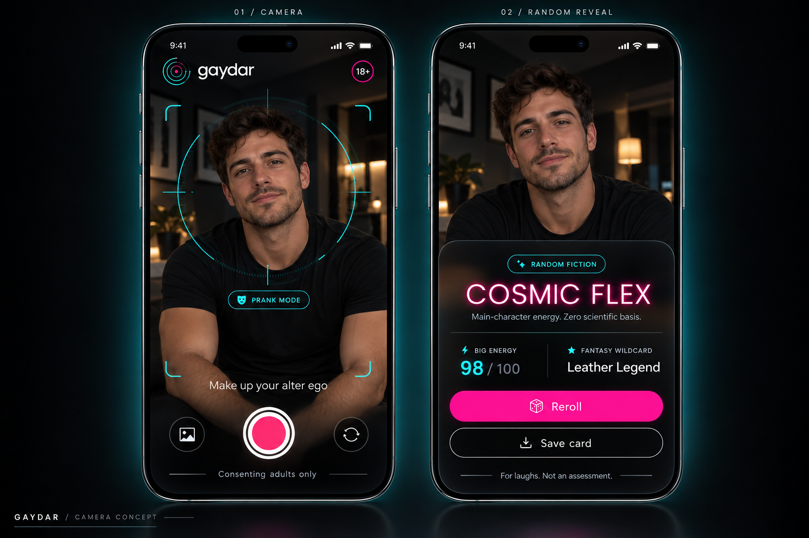

Psychology-ish.
Years of imaginary research, distilled into one extremely confident interface. Your vibes have been peer-reviewed by absolutely nobody.
CREDENTIALS: A FEELINGPsychology. Face feng shui. Divine messages.
Finally, an app brave enough to make it all up.
Point. Snap. Receive a wildly fictional alter ego.
A camera prank for consenting adults with cosmic taste.
100% random. 0% science. The tech is the joke. Results are fiction, never an assessment of someone's sexuality, body, or preferences.

01 / THE VERY ADVANCED “TECHNOLOGY”
We combined the gravitas of a research lab with the credibility of a group chat. Meet the fictional science behind the scan.
Years of imaginary research, distilled into one extremely confident interface. Your vibes have been peer-reviewed by absolutely nobody.
CREDENTIALS: A FEELINGIs your cheekbone blocking the flow of cosmic drama? Our pretend face feng shui department would love to speculate. No facial analysis happens.
METHOD: DECORATIVE GEOMETRYThe universe called. It has notes. Our fictional celestial hotline supplies random personas with the confidence of a very dramatic oracle.
SOURCE: TRUST THE GLITTER02 / A MESSAGE HAS ARRIVED
Cosmic Flex? Velvet Top? Disco Side?
120 fictional personas. One very dramatic entrance.
Try a random sample. This demo doesn't use a camera or analyze anything about you.
YOUR ENTIRELY MADE-UP ALTER EGO
03 / YOUR COSMIC FIELD GUIDE
Everyone pictured must be 18+ and happy to play. Good energy starts with asking.
Take or import a photo. Enjoy the futuristic scan while the app randomly makes things up.
Reroll the drama. Save the card. Share the joke with its fiction label firmly attached.
THE UNIVERSE IS WAITING. PROBABLY.
Android 10+ · Adults 18+ · Photos stay on device
This is an early test build distributed directly, outside Google Play. Only install the file if you trust this source. You can turn the installation permission off again afterward.
BEFORE YOU CONSULT THE COSMOS
No. Every role, energy score, and fantasy wildcard is generated at random, independently of the photo. Psychology, face feng shui, and divine messages are the parody premise. The app cannot determine sexuality, anatomy, or preferences.
The Android app works on your device and has no network permission. Unsaved photos stay in memory for the session. Saving or sharing writes a card to Pictures/Gaydar. Sharing then opens Android's share sheet, where you choose the destination.
Play with consenting adults only. Everyone pictured must be 18+ and agree to participate. Keep the fiction labels visible and share a card only with the person's permission.